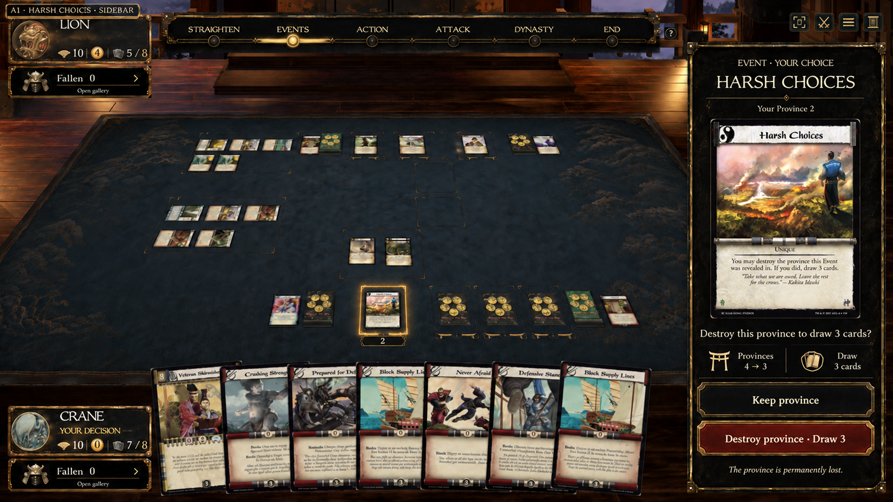
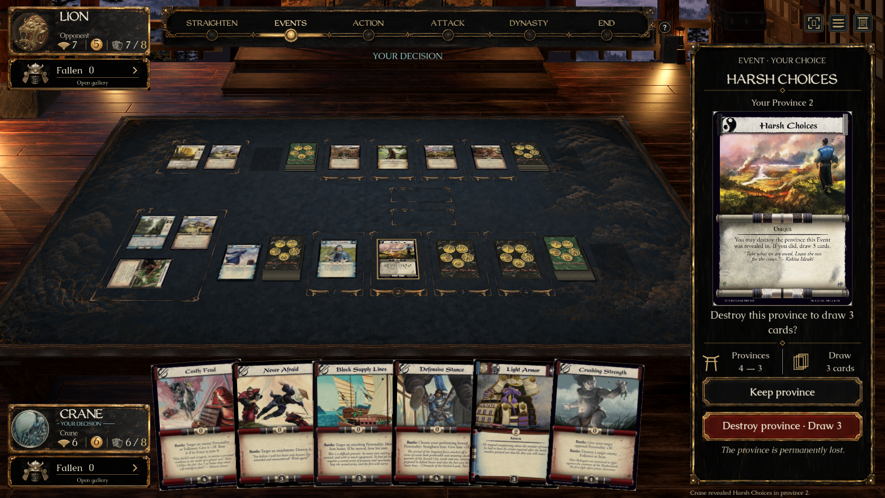
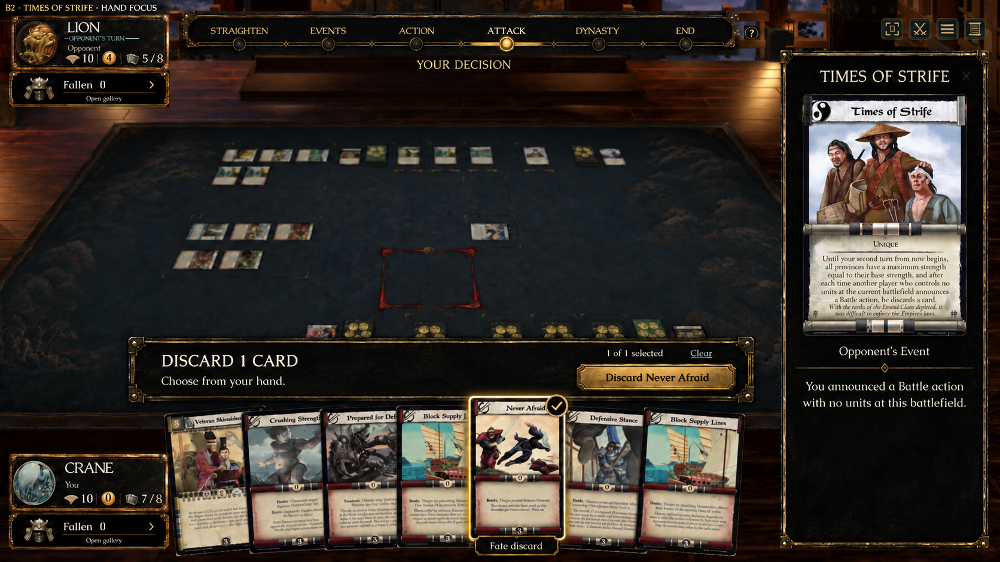
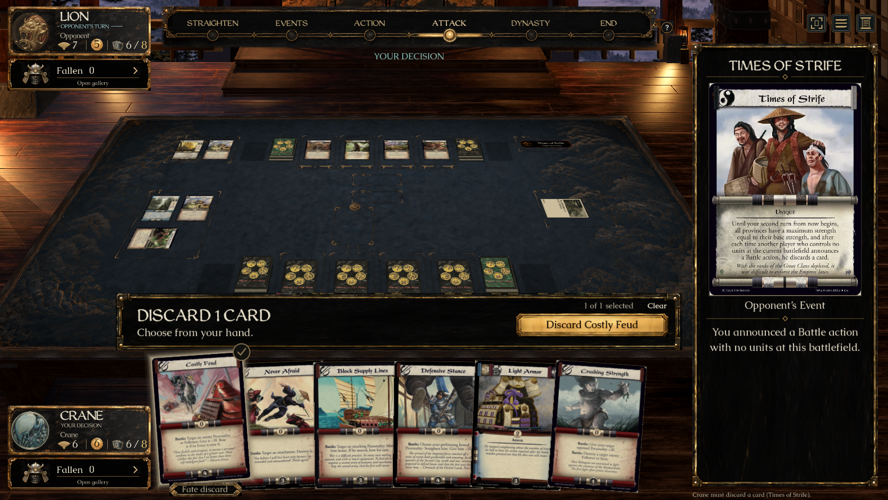

A1’s Harsh Choices sidebar and B2’s Times of Strife hand controls. These are native Godot captures using real engine decisions, original card faces and the approved lacquer/brass artwork. Card contents, camera and room reflect the running game; the full screen is not a pixel-identical reconstruction of generated illustrative gameplay.




Review fixtures are isolated from saved matches. Selecting or clearing a hand card is local; only the named Discard button submits a command. No bypass or additional confirmation is introduced. Native Windows and expert rules acceptance remain separate review steps.